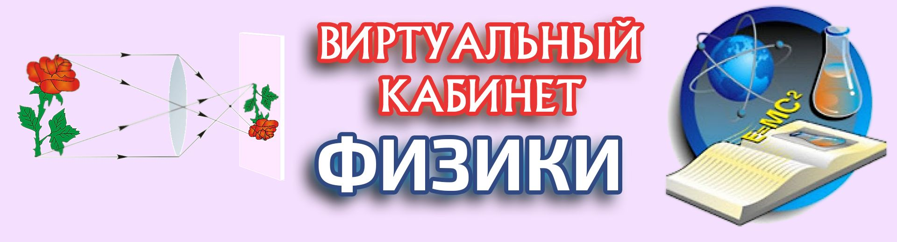
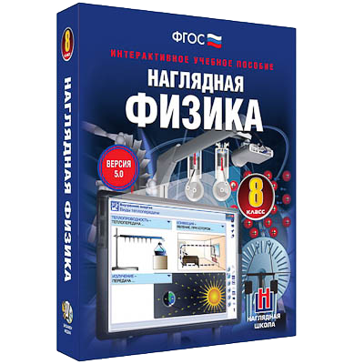
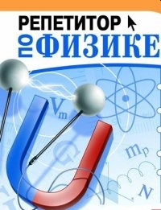
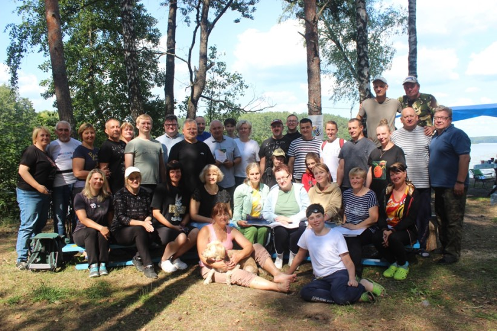

✅ Цели и задачи работы кабинета:
• мотивирование обучения и стимулирование деятельности учащихся в рамках учебного предмета физика;
• развитие любознательности у учащихся и познавательного интереса к физике;
• углубление знаний по физике.
📚 Учебники по физике
Данные материалы размещены в некоммерческих целях только для ознакомления.
Правообладатель: Издательское республиканское унитарное предприятие «Народная асвета».
Нажмите на обложку нужного вам учебника ниже, чтобы его скачать:
|
Аўтары: Ісачанкава Л.А., Ляшчынскі Ю.Д. |
Авторы: Исаченкова Л.А., Лещинский Ю.Д. |
|
Аўтары: Ісачанкава Л.А., Ляшчынскі Ю.Д., Дарафейчык У.У. |
Авторы: Исаченкова Л.А., Лещинский Ю.Д., Дорофейчик В.В. |
|
Аўтары: Ісачанкава Л.А., Сакольскі А.А., Захарэвіч К.В. |
Авторы: Исаченкова Л.А., Сокольский А.А., Захаревич Е.В. |
|
Аўтары: Грамыка А.У., Зяньковіч У.І., Луцэвіч А.А., Слесар І.Э. |
Авторы: Громыко Е.В., Зенькович В.И., Луцевич А.А., Слесарь И.Э. |
|
Аўтары: Жылко В.У., Марковіч Л.Р. |
Авторы: Жилко В.В., Маркович Л.Г. |
🧪 Виртуальная лаборатория

Базовая школа
• 7 класс. Наглядная физика. Введение. (Сссылка на оф. сайт)
• 8 класс. Наглядная физика. Часть I (Сссылка на оф. сайт)
• 9 класс. Наглядная физика. Часть II (Сссылка на оф. сайт)
• 9 класс. Наглядная физика. Десятибалльный мониторинг (Сссылка на оф. сайт)
Данные материалы доступны для ознакомления в кабинете информатики.
Правообладатель: Научно-производственное частное унитарное предприятие «ИНФОТРИУМФ».
Средняя школа
• 10 класс. ЭСО Физика. Электричество (Скачать)
• 11 класс. ЭСО Физика. Волновая оптика (Скачать)
• 11 класс. ЭСО Физика. Квантовая физика (Скачать)
Данные материалы размещены в некоммерческих целях только для ознакомления.
Правообладатель: Учреждение «Главный информационно-аналитический центр Министерства образования Республики Беларусь».
📌 Методические разработки
Набор тестов по физике для тестовой системы 10 бального мониторинга (Скачать)
Набор презентаций и методических разработок для проведения уроков по физике:
•
для 7 класса
(Скачать)
•
для 8 класса
(Скачать)
•
для 9 класса
(Скачать)
•
для 10 класса
(Скачать)
•
для 11 класса
(Скачать)
💡 Интерактивный репетитор по физике

Репетитор. Интерактивный учебник. Решение задач по физике. (Скачать)
Исправление ошибки запуска на новых 64 разрядных системах.
Данные материалы размещены в некоммерческих целях только для ознакомления.
Правообладатели: «Algorithm - Service» CJSC, «Multimedia Technologies and Distance Learning Ltd».
🧲 Видеозал - Физика в опытах
Наглядно – интересно – просто – понятно!
Видеокурс НИЯУ МИФИ, представляющий собой серию физических опытов, наглядно демонстрирующих работу основных законов Физики:
Демонстрацию физических явлений проводит незаурядный преподаватель, доцент кафедры общей физики НИЯУ «МИФИ» — Валериан Иванович Гервидс, который доступно и наглядно объясняет основные принципы и законы физики.
• Физика в опытах. Часть 1. Механика
• 1.1 КИНЕМАТИКА
• 1.2 ДИНАМИКА МАТЕРИАЛЬНОЙ ТОЧКИ 1
• 1.3 ДИНАМИКА МАТЕРИАЛЬНОЙ ТОЧКИ 2
• 1.4 ЗАКОНЫ СОХРАНЕНИЯ 1
• 1.5 ЗАКОНЫ СОХРАНЕНИЯ 2
• 1.6 ЗАКОНЫ СОХРАНЕНИЯ 3
• 1.7 НЕИНЕРЦИАЛЬНЫЕ СИСТ. ОТСЧЕТА
• 1.8 МЕХАНИКА ТВЁРДОГО ТЕЛА 1
• 1.9 МЕХАНИКА ТВЁРДОГО ТЕЛА 2
• 1.10 МЕХАНИКА ТВЕРДОГО ТЕЛА 3
• Физика в опытах. Часть 2. Колебания и молекулярная физика
• 2.1 ГАРМОНИЧЕСКИЕ КОЛЕБАНИЯ
• 2.2 СЛОЖЕНИЕ КОЛЕБАНИЙ
• 2.3 ЗАТУХАЮЩИЕ КОЛЕБАНИЯ
• 2.4 ВЫНУЖДЕННЫЕ КОЛЕБАНИЯ
• 2.5 МОЛЕКУЛЯРНАЯ ФИЗИКА. НАЧАЛО
• 2.6 ОСНОВЫ СТАТИСТИЧЕСКОЙ ФИЗИКИ
• 2.7 КРИСТАЛЛИЧ. И ЖИДКОЕ СОСТОЯНИЯ
• 2.8 ФАЗОВЫЕ ПРЕВРАЩЕНИЯ
• 2.9 ЯВЛЕНИЯ ПЕРЕНОСА
• Физика в опытах. Часть 3. Электричество и магнетизм
• 3.1 ЭЛЕКТРИЧЕСКОЕ ПОЛЕ
• 3.2 ПРОВОДНИКИ В ЭЛЕКТРИЧ. ПОЛЕ
• 3.3 ЭНЕРГИЯ ЭЛЕКТРИЧЕСКОГО ПОЛЯ
• 3.4 ПОСТОЯННЫЙ ЭЛЕКТРИЧЕСКИЙ ТОК
• 3.5 МАГНИТНОЕ ПОЛЕ
• 3.6 МАГНИТНОЕ ПОЛЕ В ВЕЩЕСТВЕ
• 3.7 ЭЛЕКТРОМАГНИТНАЯ ИНДУКЦИЯ
• 3.8 КВАЗИСТАЦИОНАРНЫЕ ТОЧКИ
• 3.9 ЭЛЕКТРИЧЕСКИЙ ТОК В ГАЗАХ
• Физика в опытах. Часть 4. Волны и оптика
• 4.1 МОДЕЛИ ВОЛН. СКОРОСТЬ СВЕТА
• 4.2 ПОЛЯРИЗАЦИЯ ВОЛН
• 4.3 ЗАКОНЫ ОТРАЖЕНИЯ И ПРЕЛОМЛЕНИЯ
• 4.4 СТОЯЧИЕ ВОЛНЫ
• 4.5 ИНТЕРФЕРЕНЦИЯ ВОЛН
• 4.6 ДИФРАКЦИЯ ФРЕНЕЛЯ
• 4.7 ДИФРАКЦИЯ ФРАУНГОФЕРА
• 4.8 ВОЛНЫ В АНИЗОТРОПНЫХ СРЕДАХ
• Физика в опытах. Часть 5. Элементы атомной и ядерной физики
• 5.1 ТЕПЛОВОЕ ИЗЛУЧЕНИЕ
• 5.2 ОПЫТ РЕЗЕРФОРДА
• 5.3 ОПЫТ ФРАНКА И ГЕРЦА
• 5.4 РЕНТГЕНОВСКОЕ И ГАММА-ИЗЛУЧЕНИЕ
• 5.5 РАДИОАКТИВНОСТЬ
• 5.6 ПРИБОРЫ И МЕТОДЫ РЕГИСТРАЦИИ ИЗЛУЧЕНИЯ
• 5.7 СОПРОТИВЛЕНИЕ МЕТАЛЛОВ И ПРОВОДНИКОВ
• 5.8 ЭФФЕКТ ЗЕЕМАНА
• 5.9 НЕКОТОРЫЕ СУГУБО КВАНТОВЫЕ ЭФФЕКТЫ
🌟 Фестиваль педагогического мастерства «Творческие каникулы»

Ежегодный фестиваль педагогического мастерства «Творческие каникулы».
Тема фестиваля — «Совершенствование профессиональных компетенций педагогов по развитию личностных, метапредметных, предметных компетенций учащихся посредством учебных предметов «Физика», «Математика» и «Астрономия».
Участники мероприятия — педагогические работники Брестской, Витебской, Гомельской, Гродненской, Минской, Могилевской областей и г. Минска.
Отчет о VII Фестивале педагогического мастерства «Творческие каникулы»
🔗 Полезные ссылки
Ресурсы преподавателя лицея БРУ Плетнёва Александра Эдуардовича:
• Видеоуроки по Физике
• Клуб юных физиков лицея БРУ
Ресурсы преподавателя МГОЛ №1 Грабцевича Владимира Ивановича:
• Физика лицеисту. 9-11 классы
• Физический портал для школьников и абитуриентов
• Ресурсный центр УО «МГОЛ №1»
Материалы отдела физико-математических и естественнонаучных дисциплин МГОИРО: